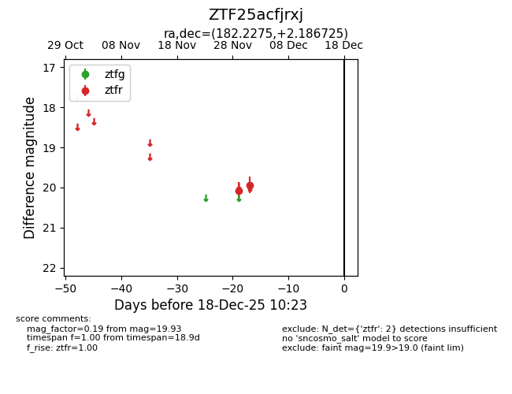
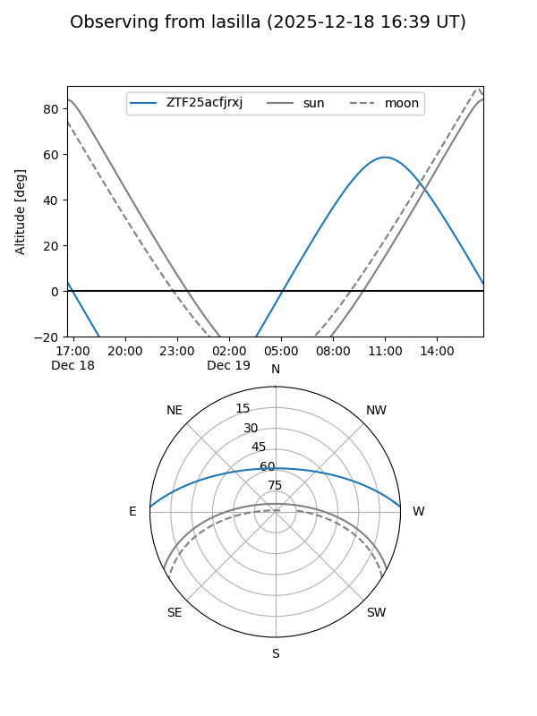
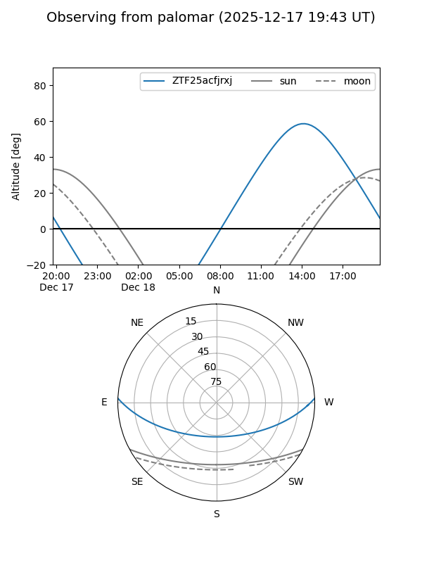

ZTF25acfjrxj
Target ZTF25acfjrxj at 2025-12-18 11:17
Aliases and brokers:
FINK: fink-portal.org/ZTF25acfjrxj
Lasair: lasair-ztf.lsst.ac.uk/objects/ZTF25acfjrxj
ALeRCE: alerce.online/object/ZTF25acfjrxj
alt names
ZTF25acfjrxj (ztf,fink_ztf)
Coordinates:
equatorial (ra, dec) = 182.2275,+2.18672
equatorial (HMS+DMS) = 12:08:54.60,+02:11:12.21
galactic (l, b) = (278.9205,+63.05866)
Photometry
last ztfr=19.93
2 ztfr detections
Lightcurve

Visibility


Additional plots